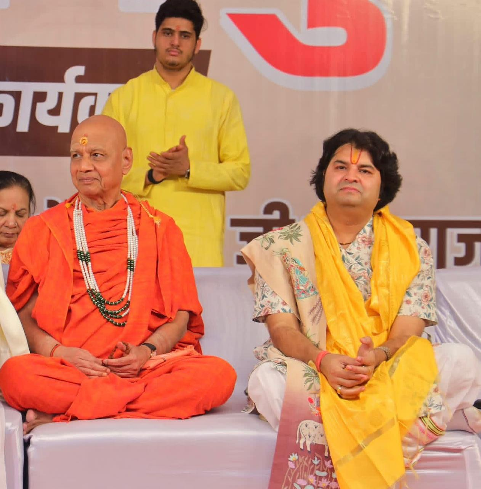
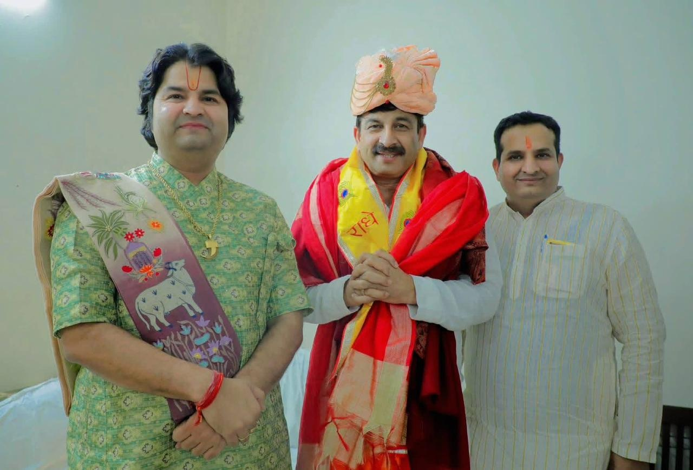
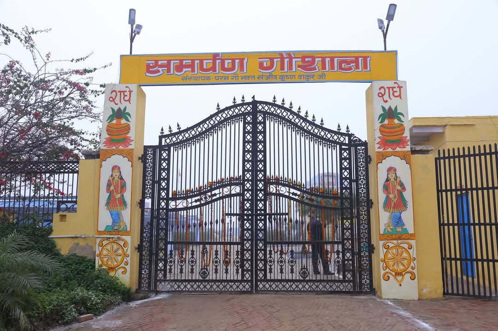
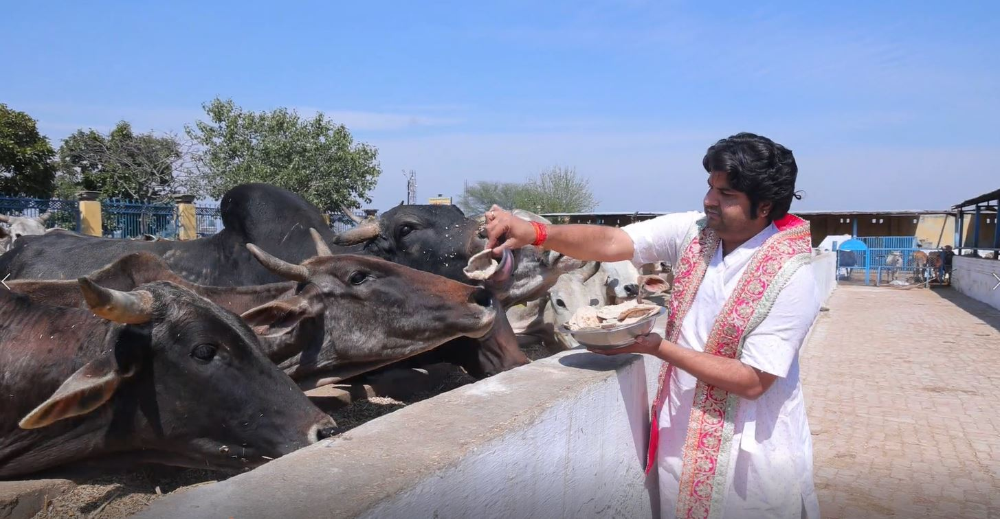

A Sacred Haven of Compassion. A Commitment to Gau Seva.
Established in 2009 by Pujya Shri Sanjiv Krishna Thakur Ji, Samarpan Gaushala is dedicated to the care, protection and service of Gau Mata.
Providing shelter, nourishment and medical care to over 600+ cows, we strive to give every cow the dignity, safety and compassion it deserves.
Sheltered & Rescued Cows
संरक्षित व पोषित गौ माता
Years of Dedicated Seva
निरंतर सेवा (Since 2009)
Fresh Fodder & Healthcare
पौष्टिक आहार व चिकित्सा
Emergency & Veterinary Care
आपातकालीन एम्बुलेंस
Every contribution directly finances fresh nutritious fodder, specialized medical care, and safe sheltered living for over 600 rescued cows.

Campus View • Govardhan, Mathura
Spacious, hygienic shelter & grazing grounds for over 600 cows.
Samarpan Gaushala was established in 2009 under the guidance and inspiration of Pujya Shri Sanjiv Krishna Thakur Ji with a vision to serve and protect Gau Mata.
What began as a commitment to Gau Seva has grown into a dedicated mission of providing care, nourishment, shelter and protection to hundreds of cows.
Today, Samarpan Gaushala provides care to over 600 cows, including abandoned, helpless and injured animals.
Pujya Shri Sanjiv Krishna Thakur Ji
Under whose divine guidance and inspiration, Samarpan Gaushala was established in 2009. His vision transforms Gau Seva into a lifelong commitment to selfless service and love for all living beings.
At Samarpan Gaushala, every day is an opportunity to serve with devotion and care.
 01
01
Providing fresh fodder, nutritious food and clean drinking water to ensure the well-being of every cow.
 03
03
Providing a safe environment where abandoned and helpless cows can live with dignity and security.
 04
04
Extending care and protection to cows that are abandoned, injured or in need of immediate assistance.
Eminent spiritual leaders and public representatives who guide and bless our mission.

Jagadguru Malookpeethadhishwar, Vrindavan Dham

Treasurer – Shri Ram Janmabhoomi Teerth Kshetra Trust
Hon’ble Chief Minister, Chhattisgarh

Hon’ble Member of Parliament – North East Delhi
Real moments of nourishment, medical rehabilitation, and joyful care in Govardhan, Mathura.



Support Gau Mata
Starting from ₹501 • 80G Tax Exempt